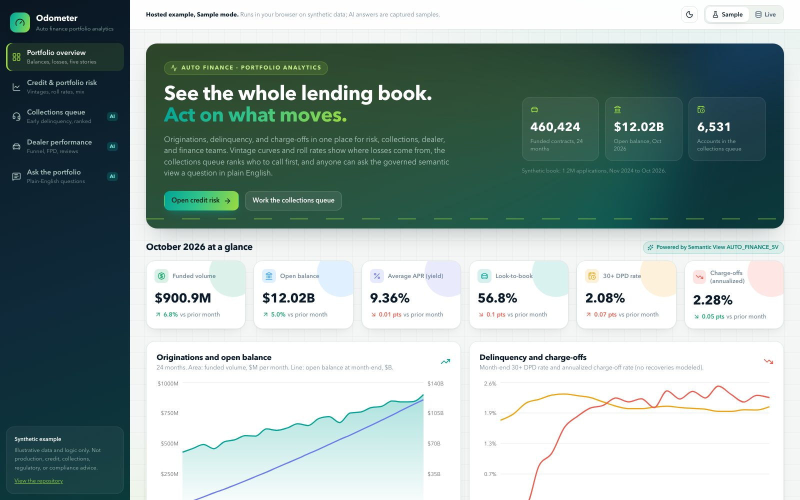
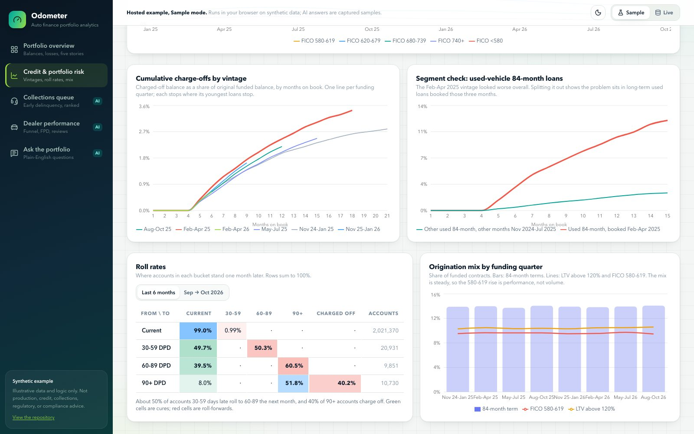
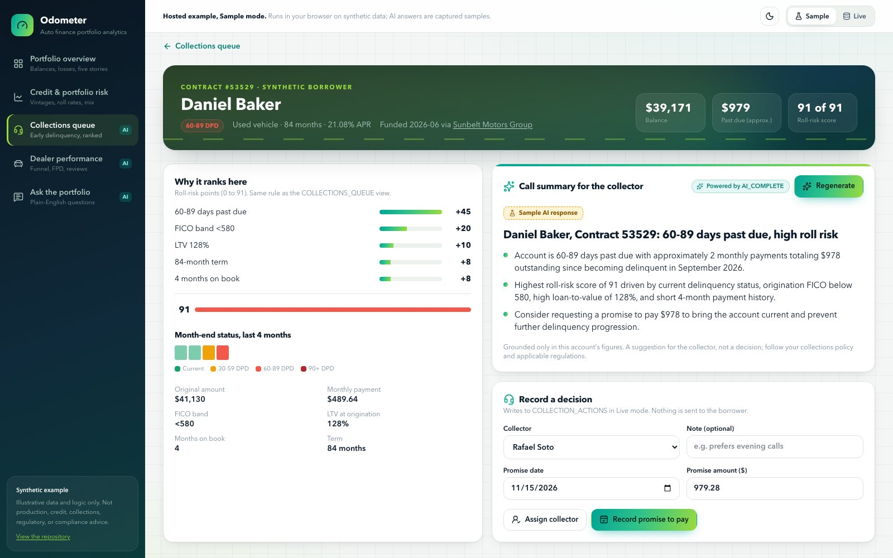
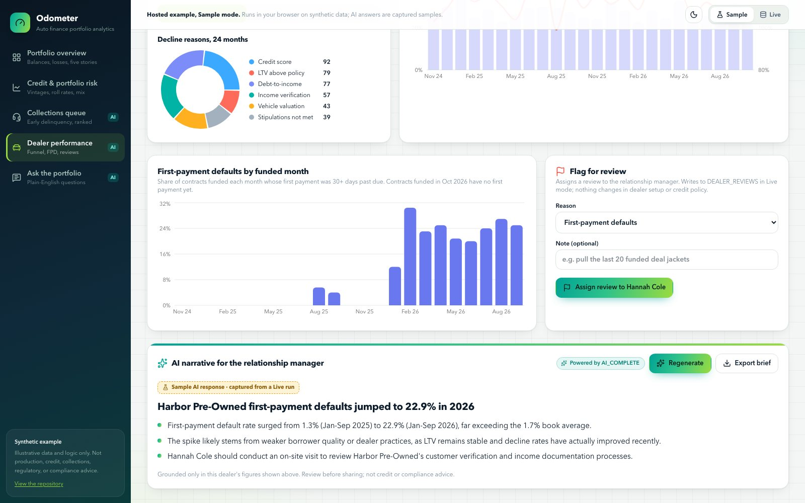
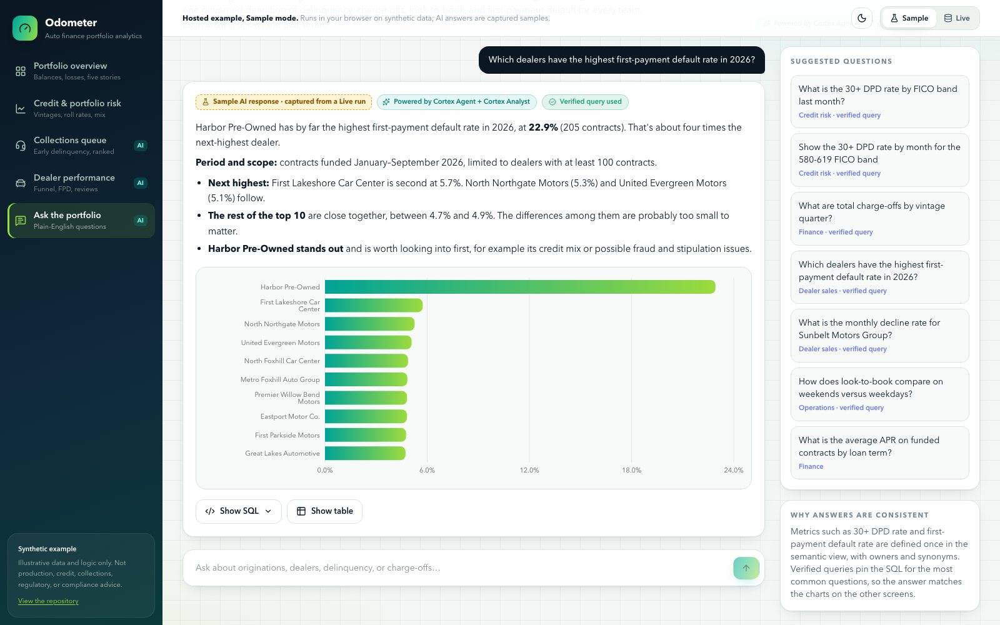
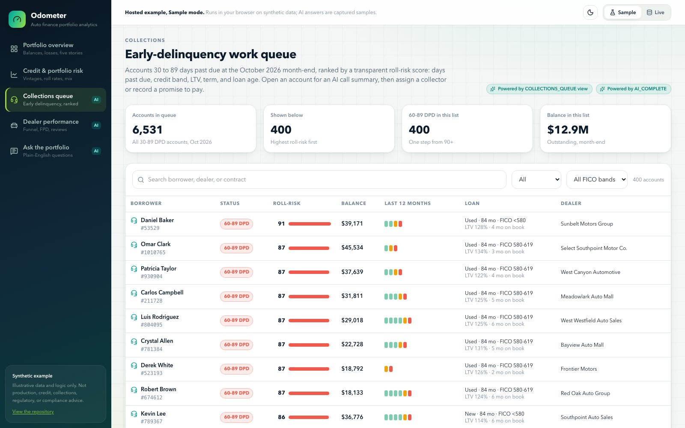
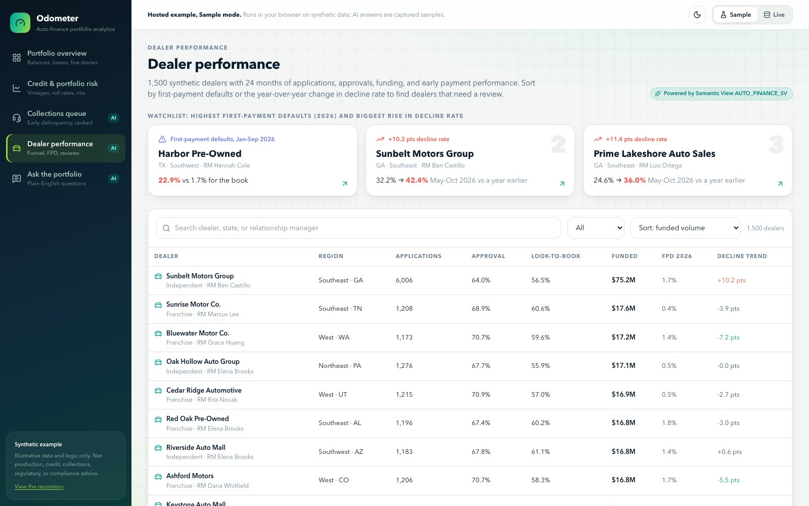
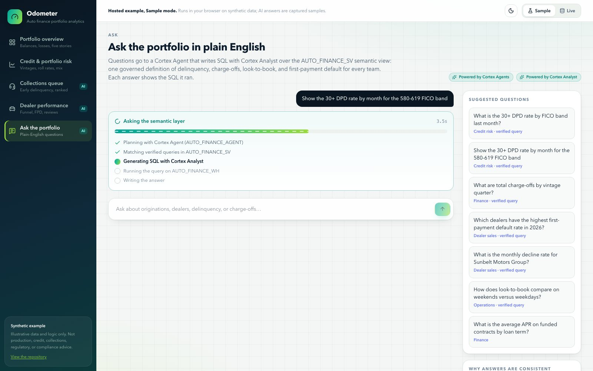
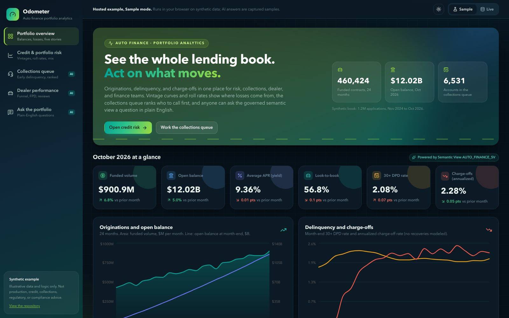

See the whole lending book. Act on what moves.
At an auto lender, the risk, collections, dealer, and finance teams each watch a different slice of the same loans. This example puts originations, delinquency, vintage losses, a ranked collections queue, and dealer performance on one governed semantic layer in Snowflake. It adds plain-English questions and AI summaries that suggest a next step, while a person makes the call.

Synthetic data, illustrative logic. Every dealer, borrower, and number here is generated by the repository. Not production, credit, collections, regulatory, or compliance advice. Not an official Snowflake product.
Four teams, one book, four versions of the numbers.
Each team's spreadsheet defines delinquency rate, charge-offs, and first-payment default a little differently. Risk sees a vintage turning bad weeks after it started. Collectors work accounts in the order they arrived. Dealer managers are the last to hear about a problem dealer. With one governed definition of each metric on contract-level data, every team acts on the same signal early.
“Is a vintage or a credit band going bad, and is it the mix or the performance?”
“Which early-delinquency accounts should my team call first today?”
“Which dealers are sending us loans that miss the first payment?”
30+ DPD in the 580-619 FICO band over 12 months, while every other band eases. The origination mix barely moved.
Cumulative charge-offs at month 15 for used 84-month loans booked Feb-Apr 2025, against the same loan type booked in other months.
First-payment defaults at one dealer in 2026, against 1.7% for the whole book. All figures come from this synthetic data set.
Four stops from a signal to a decision
Credit risk finds where losses come from
Cumulative charge-offs by funding quarter show the Feb-Apr 2025 vintage running hot. Splitting out used-vehicle 84-month loans shows where the problem sits. The roll-rate matrix shows how accounts move between delinquency buckets each month: about half of 30-59 DPD accounts roll to 60-89, and 40% of 90+ accounts charge off.
Semantic ViewContract-level data
Collections works the riskiest accounts first
The queue lists every account 30 to 89 days past due at month-end. A transparent roll-risk score ranks them from days past due, credit band, LTV, term, and loan age. When the collector opens an account, AI_COMPLETE writes a call summary grounded only in that account's figures. The collector then assigns the account or records a promise to pay, and the decision is saved to a Snowflake table.
AI_COMPLETEStructured outputHuman decision
Dealer performance catches a first-payment-default cluster
One dealer's loans started missing their first payment in 2026, and the watchlist puts that dealer at the top. The drill-down shows the jump by funded month. AI_COMPLETE writes a brief for the relationship manager, grounded in the dealer's figures and the book average. One click assigns a review.
AI_COMPLETESemantic View
Anyone can ask the portfolio
A Cortex Agent sends plain-English questions to Cortex Analyst over the AUTO_FINANCE_SV semantic view. Delinquency rate, charge-offs, look-to-book, and first-payment default are each defined once, with owners and synonyms. Verified queries pin the SQL for common questions, so answers match the charts on the other screens. Each answer shows the SQL it ran.
Cortex AgentsCortex AnalystVerified queries
More from the example




Snowflake capabilities, as used in Live mode
Every capability below ran against the example's objects in Live mode. All are generally available.
| Capability | What it does here | Docs |
|---|---|---|
| Semantic View with verified queries | AUTO_FINANCE_SV: applications, dealers, contracts, month-end payments, and targets; 17 metrics with owners and synonyms; seven verified queries | CREATE SEMANTIC VIEW |
| Cortex Analyst | Turns questions into SQL over the semantic view (as an agent tool) | Cortex Analyst |
| Cortex Agents | AUTO_FINANCE_AGENT plans each question and calls Cortex Analyst | Cortex Agents |
| AI_COMPLETE | Collector call summaries and dealer narratives with structured output, grounded only in the account's or dealer's figures | AI_COMPLETE |
Explore in your browser, then run it live
1 · No account needed
Open the hosted example, or run it locally on the bundled synthetic data:
git clone https://github.com/sfc-gh-ooral/sfguide-auto-finance-portfolio-analytics cd sfguide-auto-finance-portfolio-analytics npm install && npm run dev
2 · Live mode on your account
- Run sql/setup.sql top to bottom in a Snowsight worksheet (about a minute on XSMALL).
- Create a key pair and copy .env.example to .env.local.
- Restart with npm run dev and switch the header to Live.
- When you're done, run sql/cleanup.sql.
3 · Make it yours with Cortex Code
- “Map my loan and payment tables to the CONTRACTS and PAYMENTS_MONTHLY shapes as views. Don't change any source objects.”
- “Add our roll-rate and charge-off definitions to the semantic view, then generate verified queries and run the eval.”
- “Replace the roll-risk points with our collections segmentation, and show me the SQL before you deploy it.”